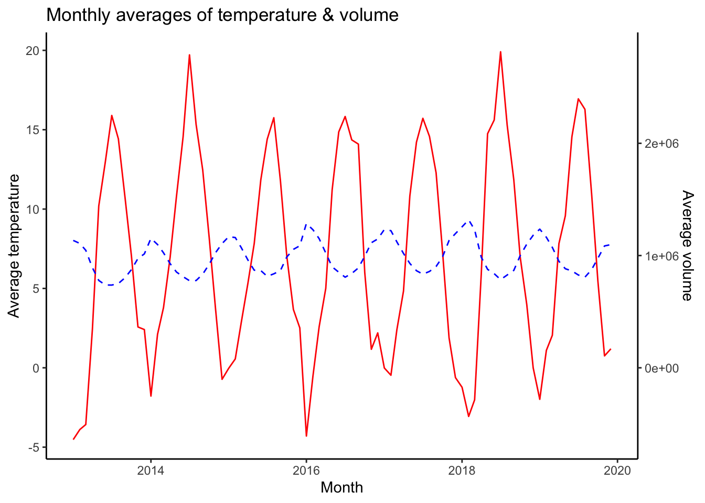

── Attaching core tidyverse packages ──────────────────────── tidyverse 2.0.0 ──
✔ dplyr 1.1.2 ✔ readr 2.1.4
✔ forcats 1.0.0 ✔ stringr 1.5.0
✔ ggplot2 3.4.3 ✔ tibble 3.2.1
✔ lubridate 1.9.2 ✔ tidyr 1.3.0
✔ purrr 1.0.2
── Conflicts ────────────────────────────────────────── tidyverse_conflicts() ──
✖ dplyr::filter() masks stats::filter()
✖ dplyr::lag() masks stats::lag()
ℹ Use the conflicted package (<http://conflicted.r-lib.org/>) to force all conflicts to become errors
library(lubridate) # for date/time manipulationlibrary(patchwork) # to combine plots into a single plot
# Loading in the datadf <-read_csv("elmarket_13_19.csv")
Rows: 2556 Columns: 21
── Column specification ────────────────────────────────────────────────────────
Delimiter: ","
dbl (20): volume, wind_production, price, temperature, precip, windspeed, m...
date (1): date
ℹ Use `spec()` to retrieve the full column specification for this data.
ℹ Specify the column types or set `show_col_types = FALSE` to quiet this message.
Assignment 2
Task A. Plotting monthly averages of temparature, volume, price and wind production.
# Creating a function that plots the average monthly data of a specified variable.plot_avg_monthly <-function(data, variable) {# Check if the specified variable is validif (variable %in%names(data)) {# Extract year and month, calculate the average per month avg_data <- data %>%mutate(year_month =floor_date(date, "month")) %>%group_by(year_month) %>%summarise(avg_var =mean(get(variable), na.rm =TRUE))# Plot p <-ggplot(avg_data, aes(x = year_month, y = avg_var)) +geom_line() +labs(y =paste("Average", variable),x ="Month",title =paste("Average Monthly", variable)) +theme_classic()return(p)# If the specified variable is invalid } else {stop("Invalid variable name. Choose a variable present in the data frame.") }}
# Create a loop that creates plots of specified variables# List of variables that we want to visualize monthly datavariable_list <-c("temperature", "volume", "price", "wind_production")# Initialized list to store the plot objectsplot_list <-list()# Looping through the variable list and applying the plot function for each variablefor (i in variable_list) { p <-plot_avg_monthly(data = df, variable = i) # calling the monthly plot function plot_list[[i]] <- p # storing the plot in a list making it accessible later }
We start by commenting the plot of monthly averages of temperature.
# Plot monthly average temperatureplot_list$temperature
As expected we see variations in average temperatures between the seasons. We notice that the lowest temperatures are recorded during winter and the highest during summers. Also, we notice that the min. and max. temperatures are relatively equal each year.
We can also comment on the plot of monthly averages in volume.
# Plot monthly average volumeplot_list$volume
In the plot we se that the energy consumption is is at max during winter and are lowest during winters. There are also differences between different year, but no great differences.
The next plot to examine is the plot of monthly averages of price.
# Plot monthly average priceplot_list$price
We notice some seasonal trends in the prices of energy, however, the biggest variations is betwween years. W notice a substantial dip in energy prices during the summer of 2015, however the price continued to rise up until the winter of 2019. After that it has returned to 2018-levels.
The last single plot to examine is the plot of monthly wind production.
# Plot monthly average wind productionplot_list$wind_production.
NULL
Also in this plot we notice seasonal variations with highs during autumn/winter and lows during summer.
Lastly, we can examine the relationship between the different variables.
# Create a function that handles multiple variables and creates single plotplot_avg_monthly_multi <-function(data, variables) {# Check if the specified variable is validif (all(variables %in%names(data))) {# Extract year and month, calculate the average per month of both variables avg_data <- data %>%mutate(year_month =floor_date(date, "month")) %>%group_by(year_month) %>%summarise(avg_var1 =mean(get(variables[1]), na.rm =TRUE),avg_var2 =mean(get(variables[2]), na.rm =TRUE), .groups ="drop")# Compute a scaling factor to map both variables onto a similar scale scale_factor <-mean(avg_data$avg_var1, na.rm =TRUE) /mean(avg_data$avg_var2, na.rm =TRUE)# Plot p <-ggplot(avg_data, aes(x = year_month)) +geom_line(aes(y = avg_var1), color ="red") +geom_line(aes(y = avg_var2 * scale_factor), color ="blue", linetype ="dashed") +scale_y_continuous(name =paste("Average", variables[1]),sec.axis =sec_axis(~. / scale_factor, name =paste("Average", variables[2])),labels = scales::number ) +labs(x ="Month",title =paste("Monthly averages of", paste(variables, collapse =" & ")) ) +theme_classic()return(p)# If the specified variable is invalid } else {stop("Invalid variable name. Choose variables present in the data frame.") }}
# Plot relationship between variables# Initialize empty listplot_list_multi <-list()# Loop over variables and store comparison plots in listfor (i in1:(length(variable_list) -1)) {for (j in (i +1):length(variable_list)) { current_vars <-c(variable_list[i], variable_list[j]) p <-plot_avg_monthly_multi(df, current_vars) plot_name <-paste(current_vars, collapse ="_vs_") plot_list_multi[[plot_name]] <- p }}
Comparing the four specified variables adds up to six comparison plots. We chose only to discuss the three most relevant, temperature vs. volume, price vs. volume, and price vs. wind_production. Notice that to compare the variables, we have added a second axis to each plot since the variables have different scales. In some cases, like the temperature vs. volume plot, this has lead to some errors. Errors like this is easy to spot if you compare with the single variable plot. Despite the scaling errors we chose to include them since they visualize relationships between the variables.
The first plot we examine is the temperature vs. volume plot.
# Compare temperature vs. volumeplot_list_multi$temperature_vs_volume

Despite the errors in scaling, we notice that when temperatures increases, the volume decrease and vice versa.
The second plot of interest is the volume vs. price plot.